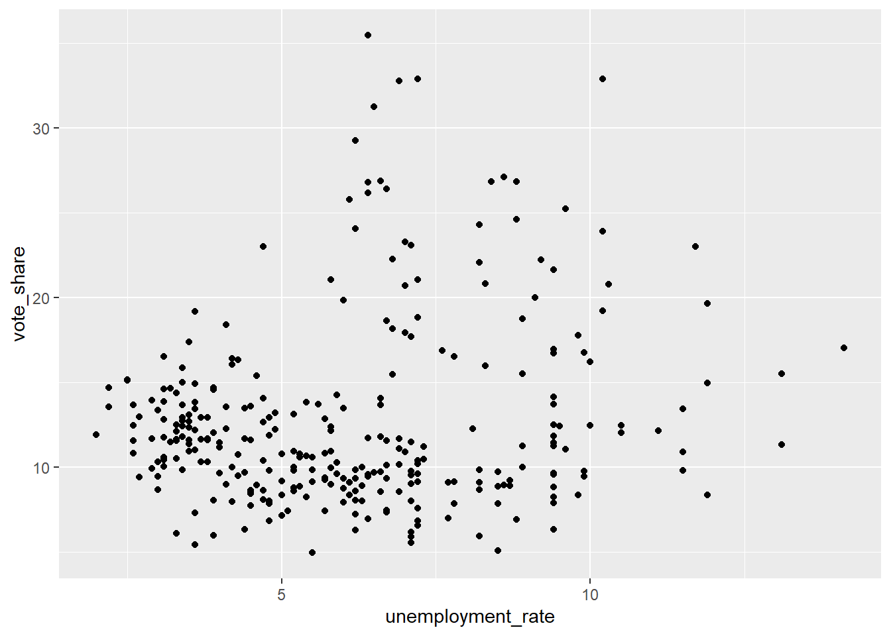
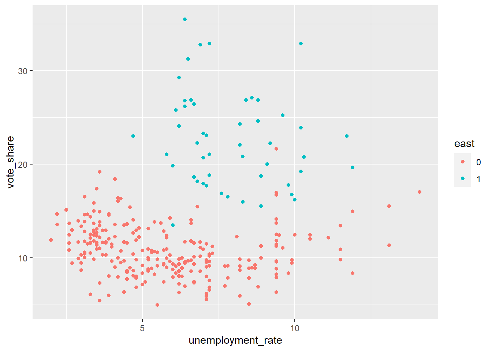
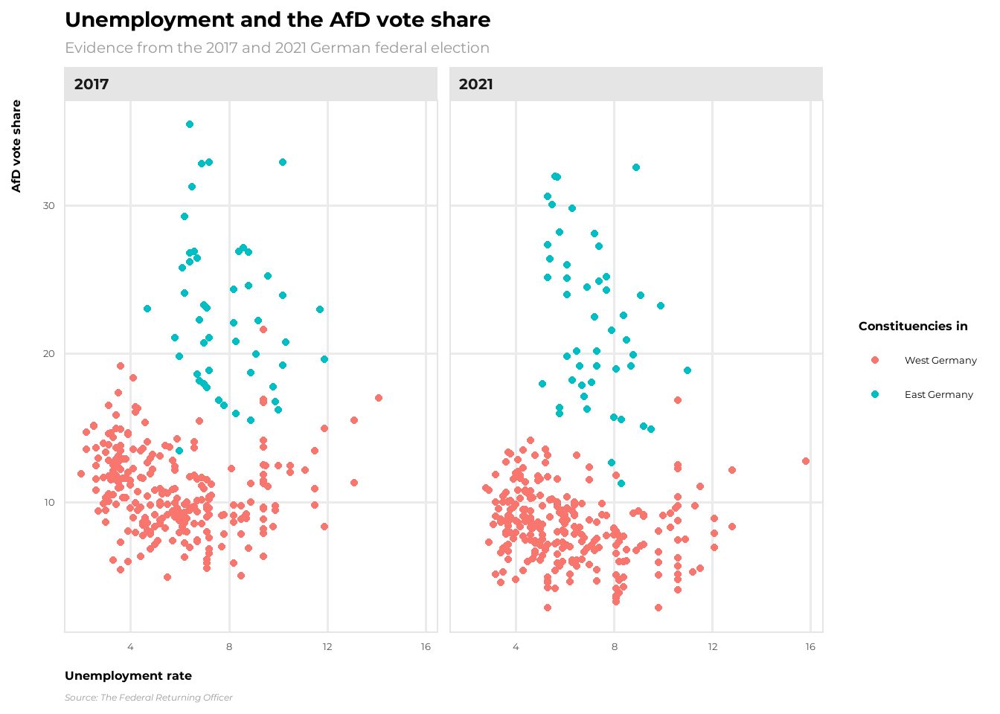

pacman::p_load( # List all packages needed
"readr",
"dplyr",
"ggplot2",
"janitor",
"showtext")Applied example - Relationship between unemplyment and AfD vote share at the consituency level
Load libraries
Load election data
Here, we load data on the constituency level from the 2021 German federal election.
# You can find the data to download also here: https://www.bundeswahlleiterin.de/bundestagswahlen/2021/ergebnisse.html
btw21_kerg2 <- read_delim("C:/Users/David/Downloads/btw21_kerg2.csv", # you have to adapt the file path
delim = ";", # set semicolon as delimiter,
locale = locale(decimal_mark = ","), # decimal mark used in the csv file is "," and not "."
escape_double = FALSE,
trim_ws = TRUE,
skip = 9) # skip the first 9 rowsTransfrom election data
Next, we transform the election data. We want to keep the vote share of the AfD at the constituency level. In addition, we want to keep the constituency number to merge the election data with structural data from the Federal Returning Officer (e.g., unemployment rate).
btw21_election <- btw21_kerg2 %>%
# we want to get rid of all rows regarding the federal and regional level, and keep the constituency level.
filter(Gebietsart == "Wahlkreis") %>%
# in additiom, we are interested in the "Zweitstimme"
filter(Stimme == 2) %>%
# next, we are primarily interested in party name and the relative share. We directly rename the variables while selecting. Further, we need the constituency number to merge the election results with structural data provided by the Federal Returning Officer.
select(constituency_number = Gebietsnummer,
party = Gruppenname,
vote_share = Prozent) %>%
# in particular we want to investigate the vote share of the radical right party, the AfD:
filter(party == "AfD")Our data frame looks like this:
head(btw21_election)# A tibble: 6 × 3
constituency_number party vote_share
<chr> <chr> <dbl>
1 001 AfD 5.78
2 002 AfD 6.10
3 003 AfD 8.37
4 004 AfD 6.56
5 005 AfD 4.94
6 006 AfD 7.35Load structural data
Here, we load structural data on the constituency level from 2021 provided by the Federal Returning Officer.
# You can find the data also here: https://www.bundeswahlleiterin.de/en/bundestagswahlen/2021/strukturdaten.html
btw21_structural <- read_delim("C:/Users/David/Downloads/btw21_strukturdaten.csv", # you have to adapt the file path
delim = ";", # set semicolon as delimiter
locale = locale(decimal_mark = ","), # decimal mark used in the csv file is "," and not "."
escape_double = FALSE,
trim_ws = TRUE,
skip = 8) # skip the first 8 rowsOur data frame looks like this
head(btw21_structural)# A tibble: 6 × 52
Land `Wahlkreis-Nr.` `Wahlkreis-Name` Gemeinden am 31.12.2…¹
<chr> <chr> <chr> <dbl>
1 Schleswig-Holstein 001 Flensburg – Schlesw… 126
2 Schleswig-Holstein 002 Nordfriesland – Dit… 197
3 Schleswig-Holstein 003 Steinburg – Dithmar… 178
4 Schleswig-Holstein 004 Rendsburg-Eckernför… 163
5 Schleswig-Holstein 005 Kiel 3
6 Schleswig-Holstein 006 Plön – Neumünster 92
# ℹ abbreviated name: ¹`Gemeinden am 31.12.2019 (Anzahl)`
# ℹ 48 more variables: `Fläche am 31.12.2019 (km²)` <dbl>,
# `Bevölkerung am 31.12.2019 - Insgesamt (in 1000)` <dbl>,
# `Bevölkerung am 31.12.2019 - Deutsche (in 1000)` <dbl>,
# `Bevölkerung am 31.12.2019 - Ausländer/-innen (%)` <dbl>,
# `Bevölkerungsdichte am 31.12.2019 (EW je km²)` <dbl>,
# `Zu- (+) bzw. Abnahme (-) der Bevölkerung 2019 - Geburtensaldo (je 1000 EW)` <dbl>, …Merge election and structural data
Using the constituency number, we are able to merge the election data set and the structural data set:
btw21 <- btw21_election %>%
# we merge both data sets by the constituency number:
left_join(btw21_structural, by = c("constituency_number" = "Wahlkreis-Nr.")) %>%
# next we rename the total unemployment variable
rename("unemployment_rate" = "Arbeitslosenquote Februar 2021 - insgesamt") %>%
# further, we create a binary variable: East/West Germany
# the code below creates a new column "East" and assigns the value "1" if the value of the column "Land" is either Brandenburg","Mecklenburg-Vorpommern", "Sachsen", "Sachsen-Anhalt", or "Thüringen" and "0" otherwise.
mutate(east = case_when(Land %in% c("Brandenburg",
"Mecklenburg-Vorpommern",
"Sachsen",
"Sachsen-Anhalt",
"Thüringen") ~ 1,
TRUE ~ 0)) %>%
# finally, we transfrom our "east" variable to a factor variable
mutate(east = as.factor(east))ggThemeAssist
In order to manipulate the ggplot theme using the ggThemeAssist package:
- highlight the code including the ggplot() function
- click on “Addins”
- select “ggplot Theme Asssistant”
- style the plot however you like
Repeat the “process” for the 2017 federal election
Download the data here: https://www.bundeswahlleiterin.de/bundestagswahlen/2017.html. The workflow is exactly the same as for the 2021 data!
# You can find the data to download also here: https://www.bundeswahlleiterin.de/bundestagswahlen/2021/ergebnisse.html
btw17_kerg2 <- read_delim("C:/Users/David/Downloads/btw17_kerg2.csv", # you have to adapt the file path
delim = ";", # set semicolon as delimiter,
locale = locale(decimal_mark = ","), # decimal mark used in the csv file is "," and not "."
escape_double = FALSE,
trim_ws = TRUE,
skip = 9) # skip the first 9 rowsbtw17_election <- btw17_kerg2 %>%
# we want to get rid of all rows regarding the federal and regional level, and keep the constituency level.
filter(Gebietsart == "Wahlkreis") %>%
# in additiom, we are interested in the "Zweitstimme"
filter(Stimme == 2) %>%
# next, we are primarily interested in party name and the relative share. We directly rename the variables while selecting. Further, we need the constituency number to merge the election results with structural data provided by the Federal Returning Officer.
select(constituency_number = Gebietsnummer,
party = Gruppenname,
vote_share = Prozent) %>%
# in particular we want to investigate the vote share of the radical right party, the AfD:
filter(party == "AfD")# You can find the data also here: https://www.bundeswahlleiterin.de/en/bundestagswahlen/2021/strukturdaten.html # you have to adapt the file path
btw17_structural <- read_delim("C:/Users/David/Downloads/btw2017_strukturdaten.csv", # you have to adapt the file path
delim = ";", # set semicolon as delimiter,
locale = locale(decimal_mark = ",", # decimal mark used in the csv file is "," and not "."
encoding = "latin1"), # set encoding due to Umlaute: ä,ö,ü and other special characters
escape_double = FALSE,
trim_ws = TRUE,
skip = 8) %>% # skip the first 9 rows
mutate(constituency_number = as.character(`Wahlkreis-Nr.`)) %>%
mutate(constituency_number = sprintf("%03d", as.numeric(constituency_number)))btw17 <- btw17_election %>%
# we merge both data sets by the constituency number:
left_join(btw17_structural, by = c("constituency_number")) %>%
# next we rename the total unemployment variable
rename("unemployment_rate" = "Arbeitslosenquote März 2017 - insgesamt") %>%
# further, we create a binary variable: East/West Germany
# the code below creates a new column "East" and assigns the value "1" if the value of the column "Land" is either Brandenburg","Mecklenburg-Vorpommern", "Sachsen", "Sachsen-Anhalt", or "Thüringen" and "0" otherwise.
mutate(east = case_when(Land %in% c("Brandenburg",
"Mecklenburg-Vorpommern",
"Sachsen",
"Sachsen-Anhalt",
"Thüringen") ~ 1,
TRUE ~ 0)) %>%
# finally, we transfrom our "east" variable to a factor variable
mutate(east = as.factor(east))ggplot(data = btw17,
mapping = aes(x = unemployment_rate,
y = vote_share)) +
geom_point()
Next, we highlight if the constituencies are in East or West Germany.
ggplot(data = btw17,
mapping = aes(x = unemployment_rate,
y = vote_share,
color = east)) +
geom_point()
Combine 2017 and 2021 data
Here, we combine the data from 2017 and 2021. We focus on the following subset of variables: constituency_number, vote_share, unemployment_rate, east. In addition, we create for each data frame a year variable.
btw2021 <- btw21 %>%
select(constituency_number, vote_share, unemployment_rate, east) %>%
tibble::add_column(year = 2021)
btw2017 <- btw17 %>%
select(constituency_number, vote_share, unemployment_rate, east) %>%
tibble::add_column(year = 2017)
btw <- bind_rows(btw2021, btw2017)Plot using facets
ggplot(data = btw,
mapping = aes(x = unemployment_rate,
y = vote_share,
color = east)) +
geom_point() +
facet_wrap(vars(year))
Apply a custom theme
Here, we load a Google font. You can select any font from here: https://fonts.google.com/.
font_add_google("Montserrat", "mont")
# or try: font_add_google("Fredericka the Great", "fredericka")
# The function below activates the loaded fonts.
showtext::showtext_auto()Now, we create our custom theme.
custom_theme <- theme_minimal(base_family = "mont", # you can change "mont" to "federicka" for example
base_size = 12) +
theme(panel.grid.minor = element_blank(), # remove minor grid lines
plot.title = element_text(face = "bold", # make title bold
size = rel(1.75)), # using rel() allows us to scale the size relative to the base size specified in theme_minimal() above
plot.subtitle = element_text(face = "plain", # make subtitle plain
size = rel(1.25),
color = "grey60"), # change color
plot.caption = element_text(face = "italic", # make caption italic
size = rel(0.75),
color = "grey60",
hjust = 0), # left-align caption
legend.title = element_text(face = "bold"),
strip.text = element_text(face = "bold", # bold facet titles
size = rel(1.25),
hjust = 0),
axis.title = element_text(face = "bold"), # bold axis titles
axis.title.x = element_text(margin = margin(t = 10),# add space above x-axis title
hjust = 0),
axis.title.y = element_text(margin = margin(r = 10),
hjust = 1), # make y-axis title top-aligned
strip.background = element_rect(fill = "grey90", # add light grey background facet titles, no borders
color = NA),
panel.border = element_rect(color = "grey90", # add thin grey border around plots
fill = NA))Finally, we only have to give informative labels to our plot and add our custom theme. That’s it!
ggplot(data = btw,
mapping = aes(x = unemployment_rate,
y = vote_share,
color = east)) +
geom_point() +
facet_wrap(vars(year)) +
labs(x = "Unemployment rate",
y = "AfD vote share",
color = "East Germany",
title = "Unemployment and the AfD vote share",
subtitle = "Evidence from the 2017 and 2021 German federal election",
caption = "Source: The Federal Returning Officer") +
# rename legend title (name) and labels (labels)
scale_color_discrete(name = "Constituencies in",
labels = c("West Germany",
"East Germany")) +
# add our custom theme
custom_theme